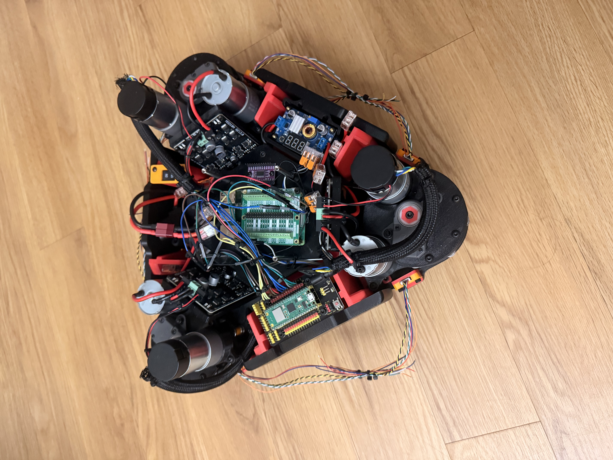
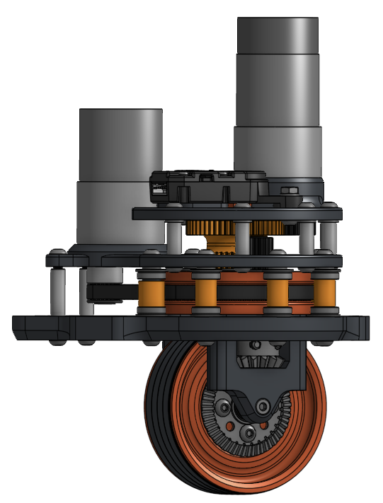
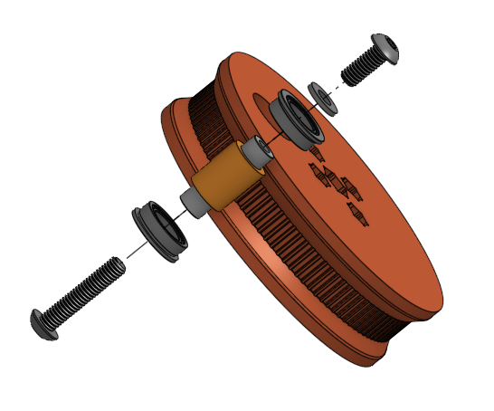

Wheel drive
Each drive motor controls its wheel’s speed and direction of rotation, providing the force that moves the chassis.
Personal robotics project / Operational prototype
I designed and built a three-module swerve drivetrain to study independent wheel drive and steering. The prototype can travel straight, move sideways, and rotate in place. I plan to use it as a platform for depth-camera navigation.
My work included researching coaxial swerve mechanisms, designing the modules, selecting electronics, and assembling the chassis and wiring.

01
A drive motor spins each wheel to propel the robot. A separate steering motor turns each module to point its wheel in a chosen direction.
Each drive motor controls its wheel’s speed and direction of rotation, providing the force that moves the chassis.
A separate steering motor rotates each module about its steering axis to set the wheel’s travel direction.
Coordinating the three wheel speeds and steering angles allows the chassis to translate or rotate. For sideways travel, the wheels align across the chassis; for rotation in place, they align tangent to circles about the chassis center.
02
Component cost and space for future attachments guided the module count, motor selection, and chassis layout.
Three modules reduce the number of motors, drivers, and mechanical parts compared with a four-module layout. The control calculations must account for the position of each module on the chassis.
I selected brushed DC motors to reduce the cost of the prototype. Production cost and manufacturing requirements have not been evaluated.
I kept the drivetrain compact and allowed space for a future arm and other attachments. The arm has not been built yet.
03
I developed a coaxial module with an internal steering disk and an adjustable bearing stack to control axial movement.
The internal disk carries the steering-belt teeth. Flanged bearings contact its two axial faces to constrain movement along the steering axis.
The bearings mount on a standoff slightly shorter than the disk’s axial thickness. Tightening the fasteners draws the assembly together and adjusts the bearing preload. The standoff length determines the available closure.
The preload should limit axial play while allowing the module to steer freely. Excessive preload can increase friction or cause binding. Axial play, friction, preload, and wear have not yet been measured.


04
Unlike my earlier builds with packaged goBILDA and REV electronics, this drivetrain required individual component selection, power distribution, and a custom wiring harness.
One dual-channel motor driver per module.
Dedicated converter output for the Pi.
Separate converter output for servo power.
Separate converter output for sensor power.
Power distribution overview; individual wiring connections are omitted.
The controller task split and communication interface still need to be documented.
As the build grew, I moved away from solderless breadboards for the current-carrying wiring. I assembled the prototype harness with lever connectors and soldered connections instead.
05
Initial tests confirm basic movement. Steering accuracy, positioning error, and payload capacity still require measurement.
Next, I plan to finalize the initial control software and construct the arm, then test handling and payload capacity with the arm installed.
Longer-term plans include depth-camera navigation and a custom PCB. The intended application is transporting payloads between locations.
Interactive CAD
Load the model to replace the preview, then drag to rotate it. Scroll or pinch to zoom.
Optimized 3D preview / about 5.4 MB.
The model only downloads when you choose to load it.